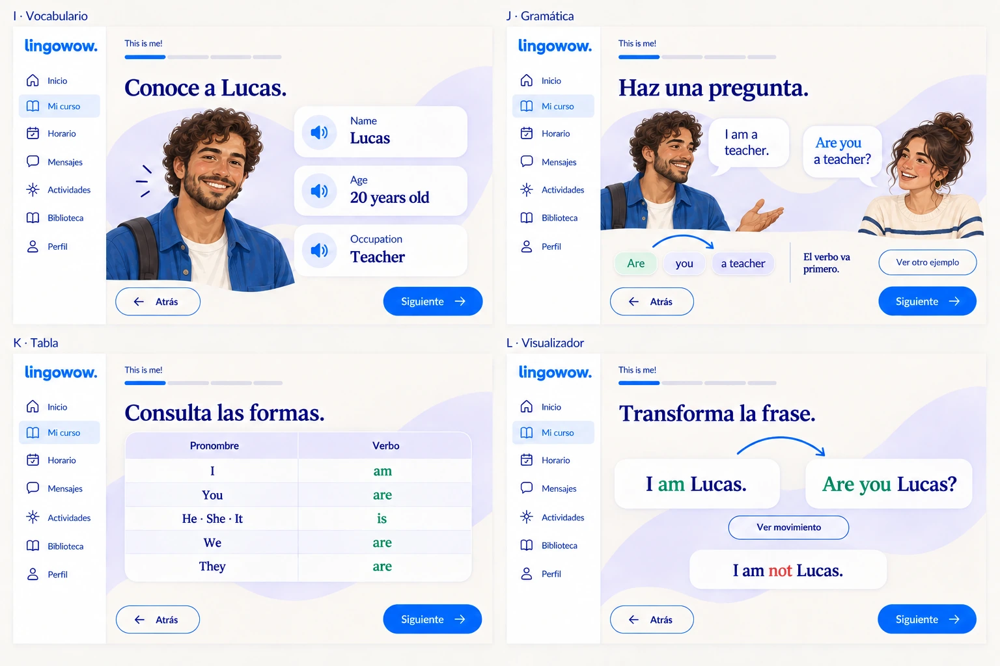
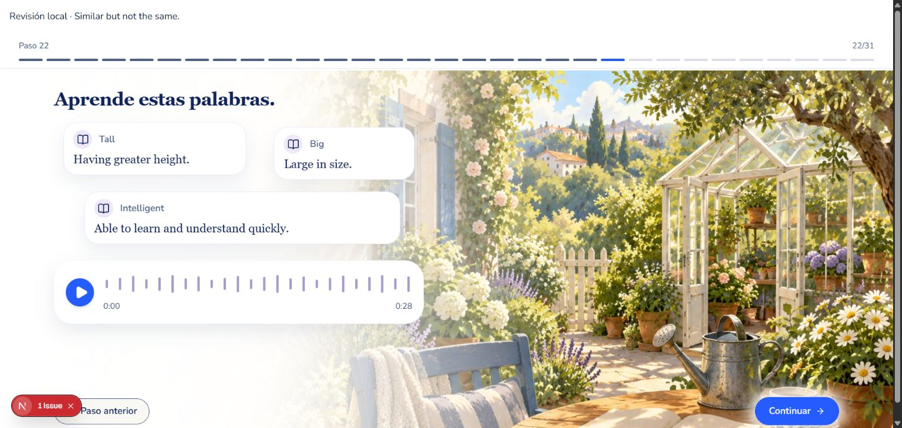
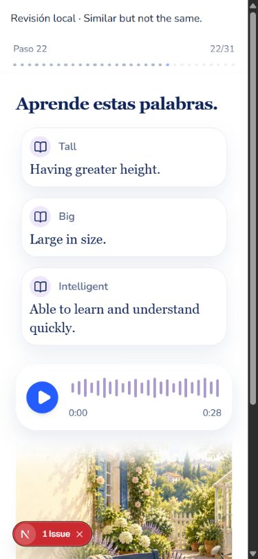
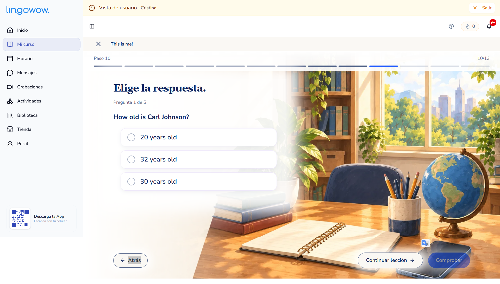
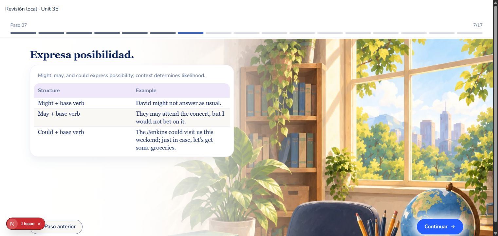
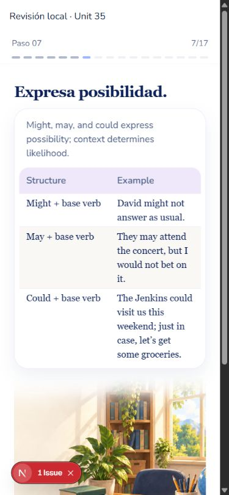
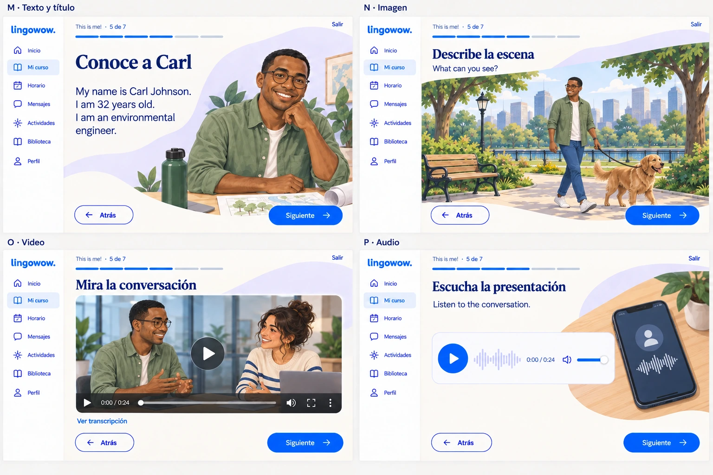
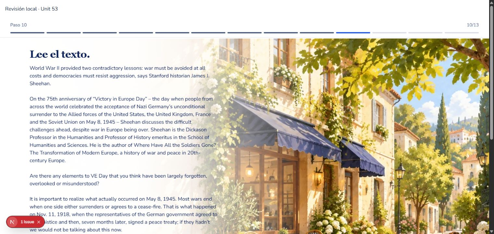
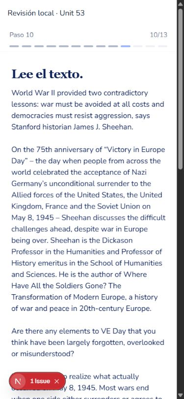
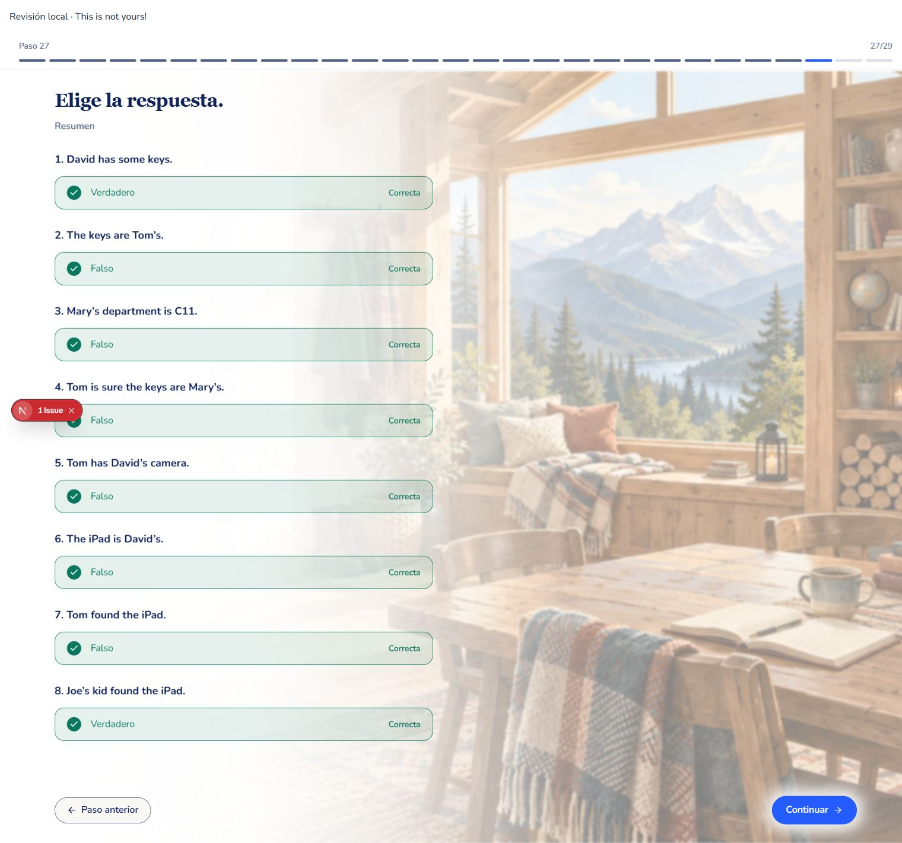

Correcciones editoriales · aceptación visual
129 incidencias confirmadas, 116 registros, 49 unidades. Se excluyen 26 propuestas editoriales. Los audios, las ilustraciones, el CSS y la identidad de las lecciones se conservan.
Referencias normativas: guía gráfica, familia v3 y las instrucciones posteriores: escenarios completos que ocupan el lienzo, fundido a blanco, título único, comprobar al seleccionar y continuar únicamente al completar. Las láminas v3 son referencias de familia; no existe un mockup específico para cada artículo o unidad de esta muestra. Los controles antiguos presentes en referencias quedan sustituidos por las instrucciones posteriores.
Contrato registrado antes de revisar: entorno editorial completo, sin recortes geométricos ni fondos CSS; escala amplia y objetos conservados; texto legible sobre el fundido blanco; título serif azul marino y cuerpo real; controles redondeados, acción primaria única y Saltar legible; columnas que se apilan o ajustan en móvil. No se cambian personajes ni escenarios.
Capturas reales de Chrome: visor existente con el inventario completo y los datos esperados del plan. La cabecera local sustituye al shell para esta revisión; la ruta QA se elimina antes de publicar. El indicador rojo de Next.js pertenece al desarrollo local. No se activó el micrófono, no se enviaron correcciones de IA ni se escribió progreso estudiantil. Se descartan los intentos de captura que no mostraban el estado de feedback a tiempo.
Vocabulario · Unidad 11
Referencia de familia: vocabulario y tabla v3
Real: términos y definiciones corregidos
Real · 390 × 844 CSS
| Requisito | Resultado |
|---|
| Entorno completo, escala, objetos y fundido | Conforme en escritorio: jardín/invernadero ocupa el fondo. En móvil, tarjetas apiladas y escenario continúa debajo. |
| Jerarquía y espaciado | Un título; tres términos por escena; definiciones legibles sin solapamientos. Las ocho palabras de origen siguen presentes en las escenas. |
| Controles y audio | Reproductor original y navegación existente conservados. No se sustituye ni se genera audio. |
Probabilidad · Unidad 35
Referencia posterior: lienzo ilustrado completo
Real: explicación fuera de la tabla
Real · tabla completa en móvil
| Requisito | Resultado |
|---|
| Escenario y cobertura | Conforme: biblioteca completa y fundido detrás del contenido. Objetos y archivo de escena conservados. |
| Título y explicación | Conforme: “Expresa posibilidad.”; la explicación contextual no ocupa una cabecera de columna. |
| Tabla móvil | Conforme: dos columnas, tres ejemplos, texto ajustado sin desplazamiento horizontal. |
| Acción primaria | Conforme: Continuar, sin acciones positivas duplicadas. |
Lectura · Unidad 53
Referencia de familia: lectura y multimedia v3
Real: comienzo restaurado y párrafos separados
Real · apertura de lectura en móvil
| Requisito | Resultado |
|---|
| Texto integrado con el escenario | Conforme en escritorio: calle ilustrada amplia, fondo blanco gradual; sin caja crema ni superposición sobre un rostro. |
| Lectura y espaciado | Conforme: párrafos separados y ancho legible. La lectura larga requiere scroll; no se comprime para caber en una pantalla. |
| Móvil | Conforme en apertura: texto ajustado y párrafos. Esta captura no muestra el final de la lectura ni su pie; no certifica toda la escena móvil. |
Elección y cierre · Unidad 8
Referencia: estado correcto y controles; prevalece el avance automático posterior Real: resumen tras responder las ocho preguntas
Real: resumen tras responder las ocho preguntas
| Requisito | Resultado |
|---|
| Feedback integrado | Conforme: opción verde con check y etiqueta breve; sin una caja de “Correcto” separada. |
| Comprobación al seleccionar | Verificada en el ejercicio real; cada selección avanzó automáticamente, sin botón Comprobar adicional. |
| Clave corregida | Verificada: “The iPad is David’s” → Falso, Correcta. Visible en el sexto resultado. |
| Continuar | Apareció después de terminar las ocho preguntas. No hubo continuación positiva paralela mientras estaban incompletas. |
Alcance y límites
Revisión académica de las 56 unidades y validación exacta de todas las correcciones. Esta aceptación visual es una muestra de cuatro unidades y siete capturas, con escritorio, móvil y estado final del ejercicio; no certifica cada escena de las 56 unidades. No se probaron permisos de micrófono ni corrección remota de IA. No se identificó una nueva discrepancia material con el contrato en los estados capturados. El artículo largo sigue requiriendo scroll.
La publicación y la verificación transaccional se registran por separado. Un informe visual no sustituye la comprobación del despliegue ni la igualdad exacta entre datos esperados y dev.